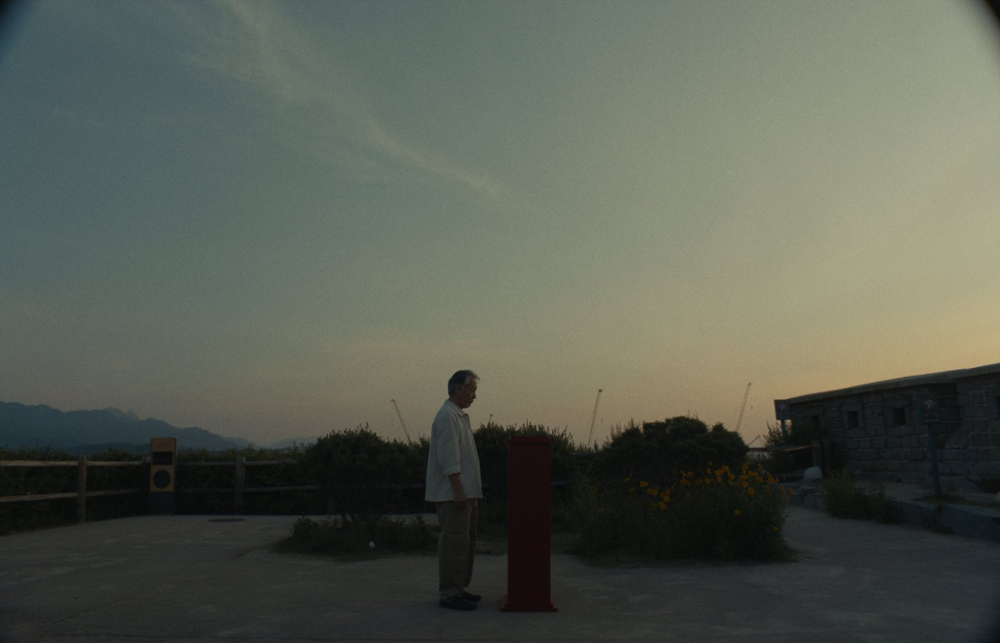
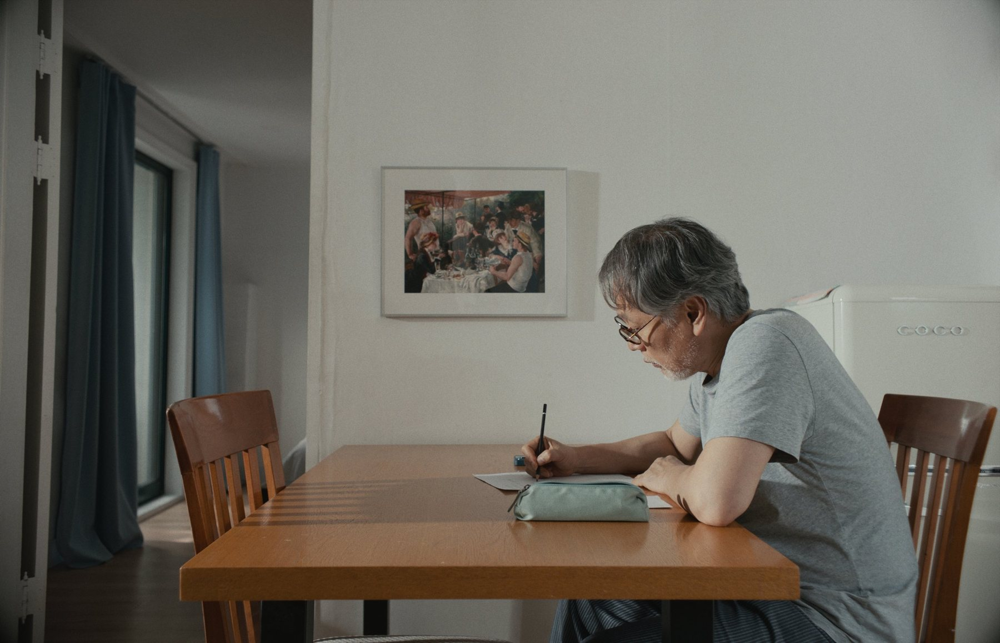
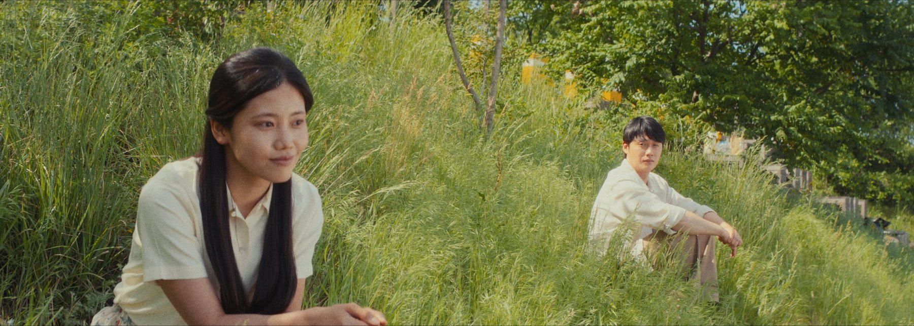
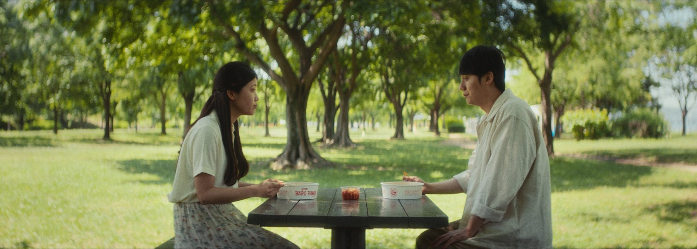
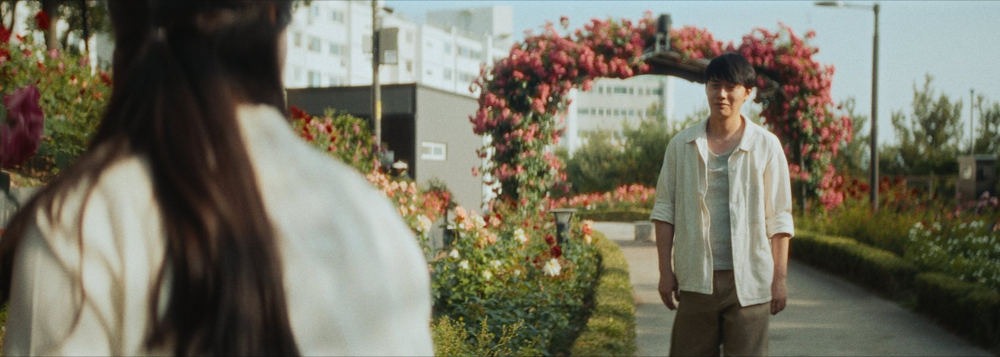

2026 · 단편 극영화 · 25분
나들이
A DAY OUT
일찍 세상을 떠난 아내에게 매주 편지를 써 온 할아버지는 어느 봄날 처음으로 그 편지를 직접 부치러 나서고, 젊은 시절의 모습으로 상상 속 아내와 서울을 거니는 나들이를 떠난다.
- Role
- Director · Director of Photography · Editor · Colorist
- Camera
- ARRI ALEXA Mini LF, ALEXA Mini
- Lenses
- Cooke Anamorphic/i FF+ 1.8x SF 50mm T2.3, Cooke Panchro/i Classic
- Format
- 3.4K · 1.55:1, 2.79:1
감독 유재문·제작 경희대학교